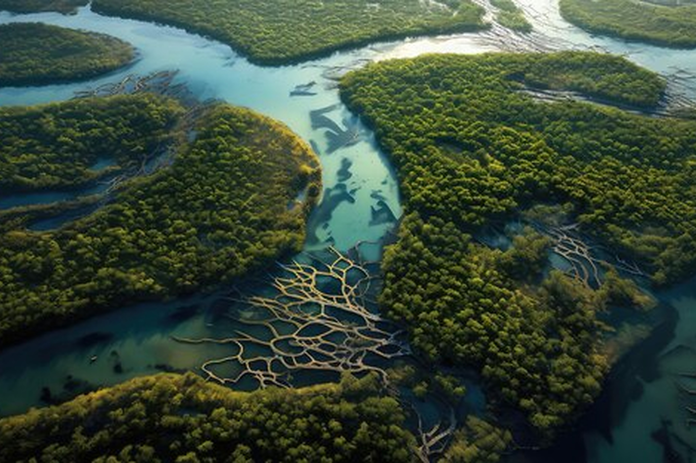
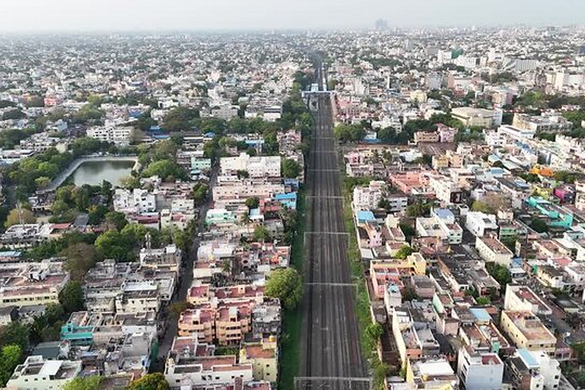

About Me.
I am Eswaran S, a Geoinformatics professional and GIS Analyst with a strong interest in Remote Sensing, GIS, spatial analysis, and environmental applications. I hold a B.E. in Geoinformatics Engineering and am pursuing an M.Tech in Remote Sensing and GIS.
My work focuses on transforming geospatial data into meaningful insights using satellite imagery, GIS, UAV-based mapping, and spatial modelling. I have experience with tools such as ArcGIS, QGIS, Google Earth Engine, SNAP, Python, and Agisoft Metashape.
My research interests include land use and land cover change, urban growth and sprawl modelling, environmental impact assessment (EIA), UAV and LiDAR mapping, and the application of machine learning in geospatial analysis. I am particularly interested in using Remote Sensing and GIS to understand environmental change and support sustainable planning and decision-making.
Experience
- GIS Analyst - Fligen Systems, Pune (Mar 2025 - Aug 2025)
- Project Intern - M S Swaminathan Research Foundation, Chennai (May 2026 - Jun 2026)
- Data Capturing Intern - Dokimi Geo Eng LLP, Salem (Sep 2024 - Nov 2024)
- GIS Analyst Intern - Infomaps, Chennai (sep 2023)
Education
- Bharathidasan University M.Tech (Remote Sensing and GIS)
- Anna University (Park college of Eng & Tech) B.E (Geoinformatics Engineering) Dissertation:"Remote Sensing and GIS based prediction of potential Limestone Mines for the Cement Industry in Ariyalur District"
{kind=link}
Certification Courses
- IGNOU PGDES- Postgraduate Diploma in Environmental Studies
Awards
Skills
- Geospatial Tool ArcGIS,ArcGIS Pro & QGIS
- Remote Sensing Tool SNAP,ENVI & Erdars Imaging
- Drone Data Processing Tool Agisoft Metashape & Global Mapper
- Coding Environment GEE, HTML, R & Python
- Surveying Equipment Handling Drone, DGPS, Bathymetry & Total Station
Selected Works.
{kind=link}
SAR-Based Rapid Detection and GNOME Modelling of a Suspected Naphtha Oil Spill in the Northern Persian Gulf
This study investigates a suspected naphtha oil spill in the northern Persian Gulf near Basra,following the reported 11 March 2026 attack on the MT Safesea Vishnu. Sentinel-1 SAR imagery acquired on 14 March 2026 revealed distinct dark patches consistent with an oil slick, while a GNOME forward simulation driven by HYCOM currents modeled a matching north-eastward drift pattern. The strong spatial agreement between the SAR-detected dark patches and the modeled trajectory supports identifying the anomaly as an oil spill linked to the incident. The work demonstrates an integrated SAR–numerical modeling framework for rapid marine pollution assessment in data-scarce, conflict-affected regions Project Link.
{kind=link}

Mangrove vulnerability assessment of Pichavaram ecosystem using remote sensing and GIS based multi criteria analysis
Using NDVI, decadal LULC transition, fragmentation, core-area, and DEM layers combined via Weighted Overlay Analysis, this study assesses Pichavaram mangrove vulnerability and finds the forest expanded from 1,373.9 ha to 1,470.5 ha (2015–2025) with reduced fragmentation and higher core habitat, indicating improved structural resilience. Still, 8% of the area — mostly peripheral zones near aquaculture and farmland — is Highly Vulnerable, 20% Vulnerable, and 72% Low Vulnerable, with widespread low-lying terrain keeping the ecosystem exposed to tidal and sea-level risks. The study offers a transferable, data-driven framework for mangrove conservation planning and coastal management. Project Link.
{kind=link}
{kind=link}

Hybrid Cellular Automata - Random Forest Framework Scenario Based Simulation of Future Urban Dynamics Around the Proposed International Greenfield Airport at Parandur, Chennai
This study focuses on predicting future urban sprawl around the proposed Parandur Greenfield Airport using Remote Sensing and GIS. A hybrid Cellular Automata–Random Forest (CA-RF) approach will be used to analyze urban growth patterns and driving factors such as roads, existing built-up areas, the airport, and proposed metro connectivity. The study will simulate future urban development under different scenarios to support sustainable regional planning. Project Link.

Remote Sensing and GIS based prediction of potential Limestone Mines for the Cement Industry in Ariyalur District
This study focused on identifying potential limestone mining areas for the cement industry in Ariyalur District using Remote Sensing and GIS. Landsat 8 satellite data and QGIS were used to analyze geological and spatial factors associated with limestone occurrence. The study aimed to support efficient mineral exploration and sustainable site selection. Project Link.
{kind=link}
EIA
ongoing work Project Link.
Ongoing and Completed Projects
Ongoing Projects
Projects Completed